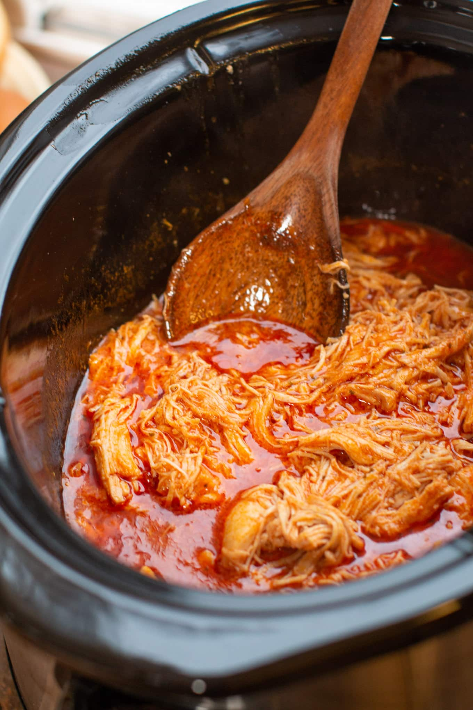
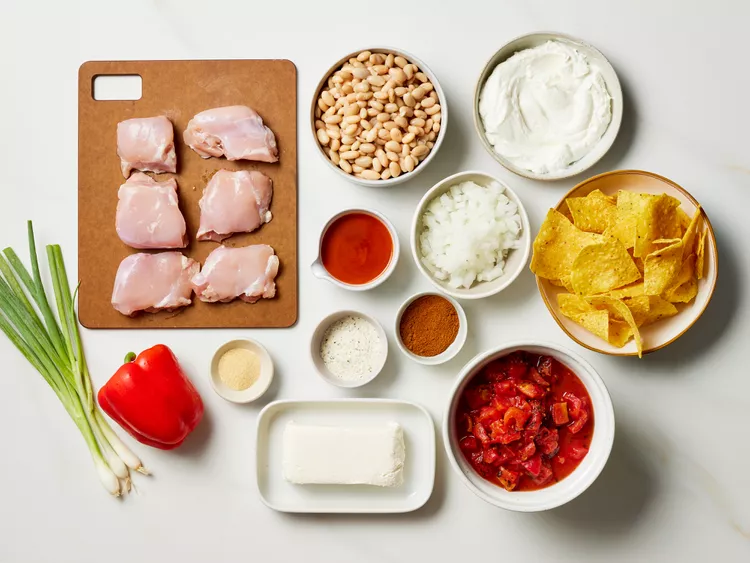

Crockpot Bufflo Chicken
Spice up your mealtime with this effortlessly delicious Crockpot Buffalo Chicken—tender, zesty,
and perfect for sandwiches, salads, or game-day nachos,
all with the convenience of your slow cooker!

Describtion
This incredibly easy crockpot buffalo chicken chili is simply delicious.
Just add all the ingredients to the slow cooker and a few hours
later you have the most flavorfull buffalo chicken chili imaginable!
Ingredients:
Feel free to adjust the ingredient quantities according to your desired serving size!
- 2 (15-ounce) cans great Northern beans or cannellini beans, drained and rinsed
- 2 (14.5-ounce) cans fire-roasted diced tomatoes with garlic
- 1 cup frozen chopped yellow onion
- 1 red bell pepper, chopped
- 1/4 cup Buffalo-style hot sauce (such as Frank's RedHot®)
- 2 tablespoons chili powder
- 2 teaspoons garlic powder
- 1 1/2 pounds boneless, skinless chicken thighs
- 1 cup plain whole-milk strained (Greek-style) yogurt
- 1 1/2 tablespoons ranch dressing mix
- 6 ounces cream cheese, cubed and softened
- 1/2 cup thinly sliced scallions
- tortilla chips for serving (optional)
Directions:

- Gather all ingredients.
- In a 6-quart slow cooker,
stir together beans,
diced tomatoes with garlic, onion, bell pepper, hot sauce,
chili powder, and garlic powder; nestle chicken in bean mixture.
- Cover and cook until chicken is tender, about 3 hours on HIGH and 5 hours on LOW
- Meanwhile, stir together yogurt and ranch dressing mix in a small bowl until smooth.
Cover and refrigerate until ready to serve.
- Remove chicken from slow cooker and shred it using two forks.
- Return shredded chicken to slow cooker. Stir in cream cheese until smooth and well combined.
Cover and cook on HIGH until warmed through, about 30 minutes.
- Serve with a dollop of yogurt mixture. Garnish with scallions and serve with tortilla chips, if desired.
Back to recipes